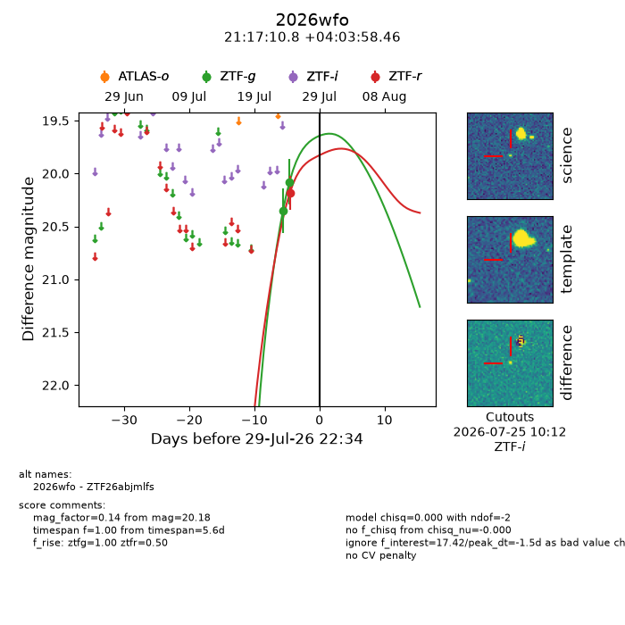
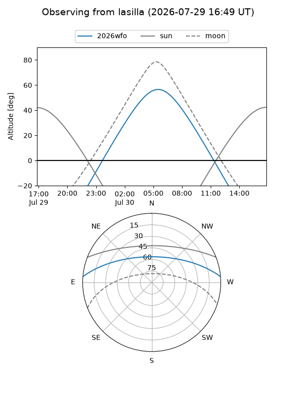
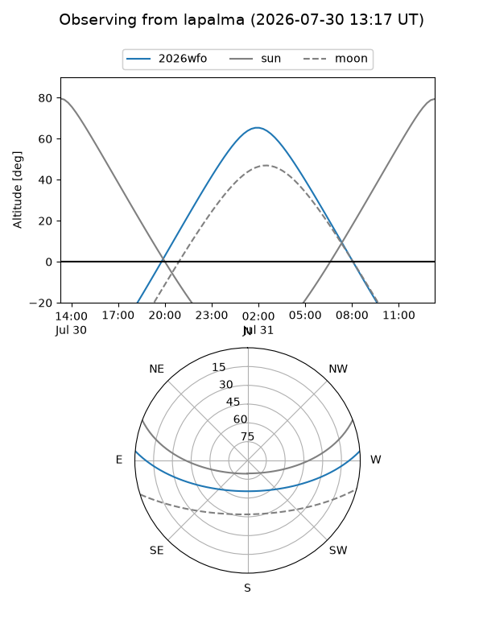
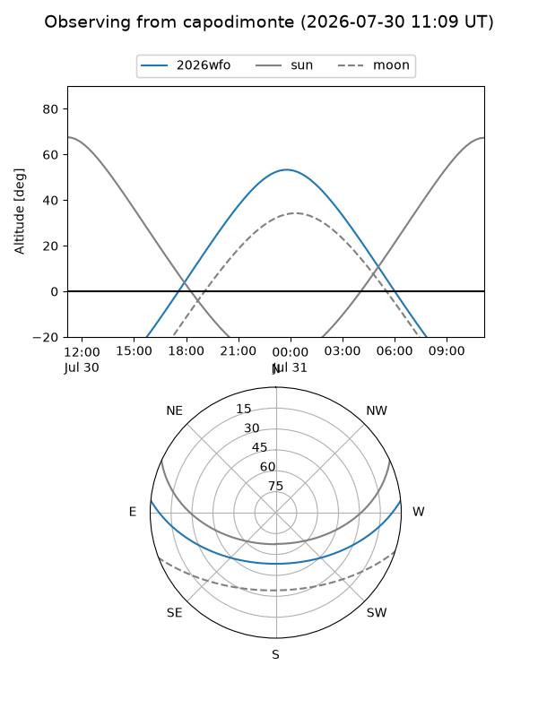
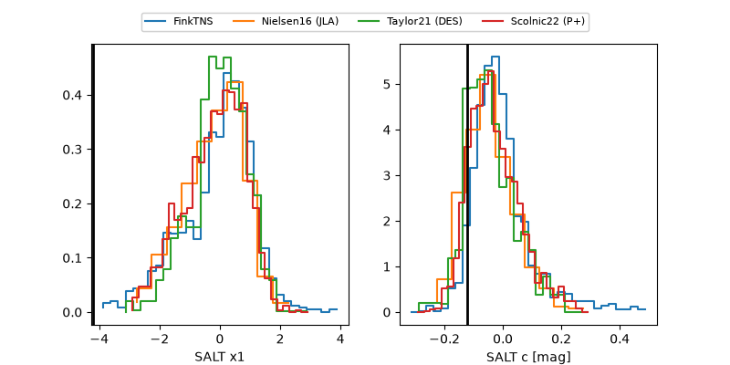

2026wfo
Target 2026wfo at 2026-07-30 10:12
Aliases and brokers:
FINK-ZTF: ztf.fink-portal.org/ZTF26abjmlfs
Lasair-ZTF: lasair-ztf.lsst.ac.uk/objects/ZTF26abjmlfs
ALeRCE-ZTF: alerce.online/object/ZTF26abjmlfs
YSE-PZ: ziggy.ucolick.org/yse/transient_detail/2026wfo
TNS name: wis-tns.org/object/2026wfo
Direct TNS query: direct search
alt names
ZTF26abjmlfs (ztf,fink_ztf)
2026wfo (tns,yse)
Coordinates:
equatorial (ra, dec) = 319.2951,+4.06624
equatorial (HMS+DMS) = 21:17:10.82,+04:03:58.46
galactic (l, b) = (55.4830,-29.66426)
Flags:
TNS type: nan
peak dt: -1.0
Photometry:
last ztfg=20.08, ztfr=20.18
2 ztfg, 1 ztfr detections
Lightcurve

Visibility



Additional plots
